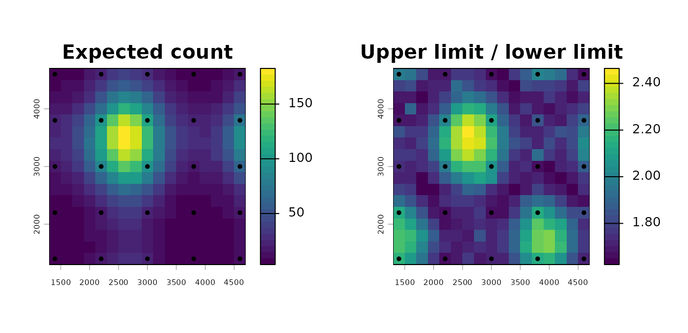

14. Predict New Sites and Years from a Bayesian Model
Bill Peterman
Source:vignettes/v14-bayesian-prediction.Rmd
v14-bayesian-prediction.RmdWhat this vignette covers
A fitted model can answer several prediction questions, and each has its own interval. You may want the scale of effect in a year you have not surveyed, the expected count at a site, the count an observer could record there, or the total across a set of sites. The answer also depends on whether the site and the year were in the data.
This vignette works through those predictions with a model fitted by
multiScale_bayes(). You will predict at surveyed sites, at
new sites and in new years, add up a total, and draw a map. Every
example uses a stored fit, so nothing here needs sampling software. Read
vignette("v13-bayesian-scales", package = "multiScaleR")
first for priors and model fitting.
Choose the prediction your question needs
| Your question | Function | The interval includes | It leaves out |
|---|---|---|---|
| What is the scale of effect in this year, or in a year not yet surveyed? | predict_scales() |
Posterior uncertainty in the scale, plus year-to-year variation for a new year | Observation noise |
| What is the expected response at these sites? | predict() |
Posterior uncertainty in scales, coefficients, and site and year effects | Observation noise |
| What might I record on a survey? | simulate() |
Everything above and observation noise | Nothing |
| What is the total across several sites? |
simulate(), then sum each replicate |
Everything above, with effects shared among sites | Nothing |
The expected response is the model’s mean for a site, which is an expected count for Poisson and negative binomial models, a probability for binomial models, and a mean for Gaussian models. Observation noise is the scatter of individual records around that mean.
Load the example
The example data are simulated counts from 25 sites surveyed over
five years (2021 to 2025), with a different habitat raster each year and
distances in meters. In the stored model, the scale of effect of
habitat differs among years, and each site and each year
has its own baseline count.
forecast_fit <- multiScale_bayes(
count ~ habitat + (1 | site) + (1 | year), # site and year baselines
inputs = annual$inputs, data = annual$data,
scales = list(habitat = ~1 + (1 | year)), # scale of effect varies by year
family = "nbinom2", row_id = "site_year",
priors = list(scale_median = 250), # prior median scale, in meters
method = "sample", chains = 4, iter = 8000, warmup = 4000, seed = 630127,
control = list(adapt_delta = 0.99, max_treedepth = 12)
)
# Survey data and prepared landscape inputs for 2021 to 2025
annual <- readRDS(system.file("extdata", "bayesian-annual-example.rds",
package = "multiScaleR"))
# The stored fit, with future surveys and their prepared landscape inputs
example <- readRDS(system.file("extdata", "bayesian-prediction-example.rds",
package = "multiScaleR"))
forecast_fit <- example$fit
summary(forecast_fit)$diagnostics$passed # TRUE: sampling checks passed
#> [1] TRUEThe terms (1 | site) and (1 | year) are
random intercepts, or baseline shifts drawn from a common
distribution, one per site or year. They are what make prediction for a
new site or year possible, because the model has estimated how much
sites and years differ.
Predict another survey at known sites and years
Start with three site-years that are in the data. The model has estimated an effect for each of these sites and years, so you make no choice about new groups.
# Three surveyed site-years. Leave out the response, which is not an input.
surveys <- annual$data[1:3, c("site", "year", "site_year")]
# Expected count: uncertainty about the mean only
expected <- predict(forecast_fit, surveys, kernel_inputs = annual$inputs,
row_id = "site_year")
# Replicated counts: 1,000 simulated surveys, with observation noise
replicated <- simulate(forecast_fit, nsim = 1000, seed = 11, newdata = surveys,
kernel_inputs = annual$inputs, row_id = "site_year")
recorded <- t(apply(as.matrix(replicated), 1, quantile,
probs = c(0.025, 0.5, 0.975)))
known <- data.frame(expected[c("point_id", "median", "lower", "upper")],
recorded[, c(2, 1, 3)])
knitr::kable(known, digits = 1, row.names = FALSE,
col.names = c("Site and year", "Expected count", "Lower", "Upper",
"Recorded count", "Lower", "Upper"))| Site and year | Expected count | Lower | Upper | Recorded count | Lower | Upper |
|---|---|---|---|---|---|---|
| s1_2021 | 3.3 | 1.9 | 5.6 | 3 | 0 | 9 |
| s2_2021 | 4.2 | 2.6 | 6.6 | 4 | 0 | 11 |
| s3_2021 | 16.6 | 11.0 | 25.3 | 15 | 5 | 37 |
How to read the table: Each row is one site in one
year. The first three numeric columns give the posterior median and 95%
interval for the expected count. The last three give the median and
central 95% range of counts a single survey could record.
kernel_inputs supplies the prepared landscape, and
row_id names the column that matches each row to it.
In a report. “At site s3 in 2021, the expected count was 16.6 animals per survey (95% credible interval 11.0 to 25.3), and a single survey would record between 5 and 37 animals with 95% probability.”
Predict the scale of effect in a new year
The model describes each year’s scale of effect, , as a typical value shifted by a year-specific deviation.
Here
is the log of the typical scale, tau
()
is the spread of log scales among years, and
is the deviation for year
.
For the Gaussian kernel,
is sigma. A surveyed year has an estimated deviation. A new year does
not, and new_levels states what to do about that.
years <- data.frame(year = c("2025", "2026")) # 2025 surveyed, 2026 not
# Draw a deviation for the new year from the estimated spread among years
scale_new <- predict_scales(forecast_fit, years, new_levels = "sample",
seed = 801)
# Reference: set the new year's deviation to zero
scale_ref <- predict_scales(forecast_fit, years[2, , drop = FALSE],
new_levels = "zero")
knitr::kable(rbind(scale_new, scale_ref)[c("group", "distribution", "median",
"lower", "upper", "p_below_min_D",
"p_above_max_D")],
digits = c(0, 0, 0, 0, 0, 2, 3), row.names = FALSE,
col.names = c("Year", "Distribution", "Median (m)", "Lower",
"Upper", "Below 100 m", "Above 1,200 m"))| Year | Distribution | Median (m) | Lower | Upper | Below 100 m | Above 1,200 m |
|---|---|---|---|---|---|---|
| year=2025 | conditional_posterior | 155 | 54 | 375 | 0.18 | 0.000 |
| year=2026 | new_group_predictive | 161 | 38 | 469 | 0.20 | 0.001 |
| year=2026 | zero_deviation_reference | 159 | 54 | 408 | 0.16 | 0.000 |
How to read the output: The
Distribution column names the question each row
answers.
-
conditional_posterioris the estimate for a surveyed year, using that year’s estimated deviation. -
new_group_predictiveis the range of scales a new year could have. Its interval carries the uncertainty in the typical scale and in tau, and the variation among years, which makes it the widest of the three. -
zero_deviation_referenceassumes the new year sits exactly at the typical scale. It is a reference value, and its narrower interval does not mean a more precise forecast.
The last two columns give the posterior probability that sigma falls
outside the range of the prepared inputs, from min_D (the
raster cell size, 100 m) to max_D (1,200 m). About 20% of
the new-year distribution lies below 100 m, which is finer than the
raster can show. Read the lower limit as “smaller than a raster cell”,
not as a precise distance.
In a report. “For a year not yet surveyed, the predicted scale of effect of habitat was sigma = 161 m (95% prediction interval 38 to 469 m), which places 90% of the kernel weight within 347 m of a survey point.”
Years are exchangeable in this model, meaning it has no trend and no memory from one year to the next. Every new year therefore receives the same distribution.
Predict counts at new sites and in new years
A prediction for a new survey needs a data frame with the covariates
and grouping columns in the model formula, and the prepared landscape
around each location. Build the landscape inputs with
kernel_prep() or kernel_prep_by_group(), as in
vignette("v06-year-specific-rasters", package = "multiScaleR"),
using the kernel, raster layers, and map units of the fitted model. Do
not standardize new covariates yourself, because prediction reuses the
mean and standard deviation from the fitted data.
new_surveys <- example$newdata # two known sites, two new, two years
future_inputs <- example$kernel_inputs # prepared landscape for these 8 rows
head(new_surveys, 4)
#> site year site_year
#> 1 s1 2026 s1_2026
#> 2 s2 2026 s2_2026
#> 3 new_site_A 2026 new_site_A_2026
#> 4 new_site_B 2026 new_site_B_2026The landscapes in future_inputs are artificial scenarios
built from the 2025 map by the script at
system.file("examples", "bayesian-prediction-data.R", package = "multiScaleR").
A prediction is conditional on the landscape you supply and carries no
uncertainty about how the landscape will change.
A new site or year has no estimated effect, so you must say how to treat it. The scale part of the model and the response part take separate instructions, because a year effect on the scale changes how the landscape is weighted and a year effect on the response changes the baseline count.
| Choice | Scale part | Response part | Meaning |
|---|---|---|---|
| Stop | new_scale_levels = "error" |
new_response_levels = "error" |
The default. A new group stops the prediction |
| Predict a new group | new_scale_levels = "sample" |
new_response_levels = "sample" |
Draw the new group’s effect from the estimated spread among groups |
| Use a typical group | new_scale_levels = "zero" |
new_response_levels = "zero" |
Set new effects to zero and keep the effects of known groups |
| Drop all group effects | scale_re.form = NA |
re.form = NA |
Set known and new effects in that part to zero |
# Expected counts, drawing an effect for each new site and year
future_mean <- predict(forecast_fit, new_surveys,
kernel_inputs = future_inputs, row_id = "site_year",
new_scale_levels = "sample",
new_response_levels = "sample", seed = 802)
# The same rows with new effects set to zero (a typical site and year)
future_typical <- predict(forecast_fit, new_surveys,
kernel_inputs = future_inputs, row_id = "site_year",
new_scale_levels = "zero",
new_response_levels = "zero")
future <- data.frame(future_mean[c("point_id", "median", "lower", "upper")],
future_typical[c("lower", "upper")])
knitr::kable(future, digits = 1, row.names = FALSE,
col.names = c("Site and year", "Expected count", "Lower", "Upper",
"Typical lower", "Typical upper"))| Site and year | Expected count | Lower | Upper | Typical lower | Typical upper |
|---|---|---|---|---|---|
| s1_2026 | 2.9 | 1.3 | 6.0 | 1.6 | 4.8 |
| s2_2026 | 12.2 | 6.4 | 24.6 | 7.3 | 20.0 |
| new_site_A_2026 | 20.4 | 8.5 | 47.4 | 15.1 | 26.6 |
| new_site_B_2026 | 4.2 | 1.6 | 9.9 | 2.8 | 5.9 |
| s1_2027 | 3.2 | 1.5 | 6.7 | 1.7 | 5.3 |
| s2_2027 | 13.8 | 6.5 | 26.8 | 8.1 | 22.1 |
| new_site_A_2027 | 22.3 | 8.5 | 54.8 | 16.4 | 30.0 |
| new_site_B_2027 | 4.6 | 1.8 | 11.7 | 3.2 | 6.4 |
attr(future_mean, "new_groups") # which new groups were drawn
#> component covariate group level action
#> 1 scale habitat year 2026 sample
#> 2 scale habitat year 2027 sample
#> 3 response site new_site_A sample
#> 4 response site new_site_B sample
#> 5 response year 2026 sample
#> 6 response year 2027 sampleHow to read the output: The first interval allows
the new year, and any new site, to differ from the average. Because the
second assumes every new group is exactly average, it is narrower. Sites
s1 and s2 keep their estimated site effects in
both. In the new_groups attribute, each row is one new
group and what was done with it. Year appears twice because the model
has one year effect on the scale and another on the response.
In a report. “At a new site with the landscape of scenario new_site_A_2026, the expected count was 20.4 animals per survey (95% prediction interval 8.5 to 47.4), allowing for unknown site and year effects.”
What this means for your study. Report the
"sample"interval when you forecast a site or year you did not survey. The"zero"interval describes a hypothetical average group and understates how far a real new site or year can depart from the model’s mean.
A year entered as a fixed factor, such as factor(year),
has one coefficient per surveyed year and none for a new one.
predict() then stops with an error under every policy. Use
a random intercept for year, as forecast_fit does, when you
intend to predict years you have not surveyed.
Predict what you might record, and add up a total
simulate() returns one row per survey and one column per
replicate. Each replicate is a complete simulated data set, in which
surveys from the same new year share that year’s effect.
# 1,000 replicate data sets for the eight future surveys
future_counts <- simulate(forecast_fit, nsim = 1000, seed = 803,
newdata = new_surveys, kernel_inputs = future_inputs,
row_id = "site_year", new_scale_levels = "sample",
new_response_levels = "sample")
# Range of counts each survey could record (first four shown)
by_survey <- t(apply(as.matrix(future_counts), 1, quantile,
probs = c(0.025, 0.5, 0.975)))
rownames(by_survey) <- new_surveys$site_year
head(by_survey, 4)
#> 2.5% 50% 97.5%
#> s1_2026 0 2 9
#> s2_2026 3 11 32
#> new_site_A_2026 5 19 58
#> new_site_B_2026 0 4 15
# Total over the eight surveys: sum within each replicate, then summarize
total <- quantile(colSums(future_counts), c(0.025, 0.5, 0.975))
total
#> 2.5% 50% 97.5%
#> 43.000 84.000 161.025
# Not an interval for the total: the survey limits added together
colSums(by_survey)
#> 2.5% 50% 97.5%
#> 16.00 76.00 235.05How to read the output: The first table gives the counts a single survey could record. For the total, sum each column first and take quantiles of the sums. Adding the survey limits gives 16 to 235, far wider than the correct interval of 43 to 161, because the eight surveys will not all fall at their lower limits together.
In a report. “Across the eight planned surveys we predict a total of 84 animals (95% prediction interval 43 to 161).”
Put every survey that enters a total into one call. Separate calls
draw separate effects for the same new year, which breaks the link among
its surveys. For a total of expected counts, use
predict(..., summary = FALSE). It returns one row per
posterior draw and one column per survey, the reverse of
simulate(), so sum with rowSums().
For a binomial model fitted to
cbind(successes, failures), simulate() also
needs the number of trials at each new survey, for example
trials = rep(10L, nrow(new_surveys)). It returns numbers of
successes, while predict() returns probabilities.
Map the expected count
multiScale_bayes() fits have no raster method. To draw a
map, treat a grid of locations as new sites, prepare the landscape
around each one, and predict. The first chunk rebuilds the artificial
2025 habitat raster of the example. With your own data, read the raster
you used for fitting.
# Rebuild the example's 2025 habitat map (60 x 60 cells of 100 m)
set.seed(521)
blank <- rast(nrows = 60, ncols = 60, xmin = 0, xmax = 6000,
ymin = 0, ymax = 6000, crs = "EPSG:26915")
xy <- xyFromCell(blank, seq_len(ncell(blank)))
for (j in 1:5) { # the five yearly maps share one random stream
habitat_2025 <- setValues(blank, sin(xy[, 1] / 400 + j / 4) +
cos(xy[, 2] / 550) + rnorm(nrow(xy), sd = 0.2))
}
names(habitat_2025) <- "habitat"
# A grid of locations every 200 m across the surveyed area
grid <- expand.grid(x = seq(1400, 4600, by = 200),
y = seq(1400, 4600, by = 200))
grid_pts <- vect(grid, geom = c("x", "y"), crs = "EPSG:26915")
# Prepare the landscape around each location, with the settings used in fitting
grid_inputs <- kernel_prep(pts = grid_pts, raster_stack = habitat_2025,
max_D = 1200, kernel = "gaussian", sigma = 250,
nbins = 48, store_cell_data = FALSE, verbose = FALSE)
# Each location is a new site in a surveyed year
grid_data <- data.frame(cell = grid_inputs$binned$point_ids,
site = paste0("cell_", seq_len(nrow(grid))),
year = "2025")
# Expected count at a typical site (site effect set to zero)
grid_pred <- predict(forecast_fit, grid_data, kernel_inputs = grid_inputs,
row_id = "cell", new_response_levels = "zero")
# Put the posterior median and the ratio of the interval limits on a raster
map <- rast(cbind(grid, median = grid_pred$median,
ratio = grid_pred$upper / grid_pred$lower), type = "xyz")
# The 25 survey sites sit on a regular 800 m grid
sites <- vect(expand.grid(x = seq(1400, 4600, by = 800),
y = seq(1400, 4600, by = 800)),
geom = c("x", "y"), crs = "EPSG:26915")
plot(map, main = c("Expected count", "Upper limit / lower limit"),
mar = c(2, 2.5, 2, 5), pax = list(cex.axis = 0.7),
fun = function() points(sites, pch = 19, cex = 0.5))
Expected count in 2025 at a typical site (left) and the ratio of its upper to its lower 95% limit (right). Points are the survey sites.
How to read these plots: The left panel is the posterior median of the expected count for 2025 at a site with an average site effect. It ranges from 3.4 to 183 animals per survey. The right panel divides the upper 95% limit by the lower one, so a value of 2 means the upper limit is twice the lower. Here the ratio runs from 1.6 to 2.5, and it is highest where habitat is most or least abundant. Each interval describes one location. The map holds no information about a total across cells.
Unlike kernel_scale.raster(), predict() for
a Bayesian fit has no clamp argument. The peak of this map
lies between survey sites, where a few locations hold more habitat than
any surveyed site, so the highest values are extrapolated. Treat them
with caution.
Check before you rely on a prediction
-
Sampling diagnostics. Prediction passes the fitted
posterior forward and cannot repair a fit that failed its checks.
Inspect
summary(fit)$diagnosticsfirst, as described invignette("v15-bayesian-computation", package = "multiScaleR"). -
Landscape support. A new kernel uses only the
landscape you prepared. A predicted scale larger than
max_Dcannot draw on cells beyond it. -
The level you predict. To test predictions, hold
out data at the level you intend to predict. A held-out visit at a
surveyed site is easier to predict than a whole new site or year.
cross_validate_bayes()refits the model without the held-out rows and scores them, as described invignette("v08-cross-validation", package = "multiScaleR"). -
Formula transformations.
scale()andpoly()keep the values learned from the fitted data. An expression such asI(x - mean(x))takes its mean from the new rows instead, so compute that covariate before fitting.
Quick reference
# 0. Stored fit, surveys to predict, and their prepared landscape inputs
forecast_fit <- example$fit
surveys <- annual$data[1:3, c("site", "year", "site_year")]
years <- data.frame(year = c("2025", "2026"))
new_surveys <- example$newdata
future_inputs <- example$kernel_inputs
# 1. Known sites and years: expected count, then counts you might record
expected <- predict(forecast_fit, surveys, kernel_inputs = annual$inputs,
row_id = "site_year")
replicated <- simulate(forecast_fit, nsim = 1000, seed = 11, newdata = surveys,
kernel_inputs = annual$inputs, row_id = "site_year")
# 2. Scale of effect in a surveyed year and a new year
scale_new <- predict_scales(forecast_fit, years, new_levels = "sample",
seed = 801) # new-year forecast
scale_ref <- predict_scales(forecast_fit, years[2, , drop = FALSE],
new_levels = "zero") # typical-year reference
# 3. Expected counts at new sites and in new years
future_mean <- predict(forecast_fit, new_surveys,
kernel_inputs = future_inputs, row_id = "site_year",
new_scale_levels = "sample",
new_response_levels = "sample", seed = 802)
attr(future_mean, "new_groups") # what was drawn
# 4. Counts you might record, and a total across surveys
future_counts <- simulate(forecast_fit, nsim = 1000, seed = 803,
newdata = new_surveys, kernel_inputs = future_inputs,
row_id = "site_year", new_scale_levels = "sample",
new_response_levels = "sample")
quantile(colSums(future_counts), c(0.025, 0.5, 0.975)) # interval for the total
# 5. Map: prepare a grid of locations and predict at a typical site
grid_inputs <- kernel_prep(pts = grid_pts, raster_stack = habitat_2025,
max_D = 1200, kernel = "gaussian", sigma = 250,
nbins = 48, store_cell_data = FALSE, verbose = FALSE)
grid_pred <- predict(forecast_fit, grid_data, kernel_inputs = grid_inputs,
row_id = "cell", new_response_levels = "zero")Summary of key functions
| Function | Purpose |
|---|---|
predict_scales() |
Scale of effect for surveyed groups, new groups, or a typical group |
predict() |
Expected response, or the linear predictor with
type = "link", at fitted or new surveys |
simulate() |
Replicate observations with observation noise, for single surveys and totals |
kernel_prep(),
kernel_prep_by_group()
|
Prepare the landscape around new survey or map locations |
kernel_dist() |
Convert sigma to the distance that holds a chosen share of the kernel weight |
See also
-
vignette("v13-bayesian-scales", package = "multiScaleR"), priors, model fitting, and reading a Bayesian fit. -
vignette("v15-bayesian-computation", package = "multiScaleR"), choosing a computation method and checking its diagnostics. -
vignette("v09-estimates-and-intervals", package = "multiScaleR"), what each interval includes and leaves out. -
vignette("v06-year-specific-rasters", package = "multiScaleR"), preparing landscape inputs when each year has its own map. -
vignette("v01-quickstart", package = "multiScaleR"), the core workflow. - The help page
?"multiScaleR-glossary"defines the terms used in these vignettes.